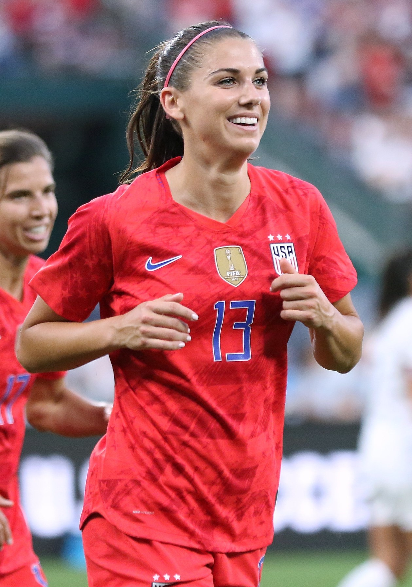

Alex Morgan encerrou a carreira profissional em 2024 com um currículo reservado a poucas jogadoras na história do futebol feminino. Foram duas Copas do Mundo conquistadas, uma medalha de ouro olímpica, 224 partidas e 123 gols pela seleção dos Estados Unidos, além de títulos importantes por clubes nos EUA e na Europa. Mais do que os números, porém, sua trajetória atravessou uma época de expansão internacional da modalidade e ajudou a transformar uma atacante decisiva em uma das figuras mais reconhecidas de sua geração.
Nascida em 2 de julho de 1989, em San Dimas, na Califórnia, Alexandra Patricia Morgan cresceu em Diamond Bar. A caminhada até a elite não seguiu uma formação precoce típica de muitas estrelas modernas: ela ingressou no Cypress Elite aos 14 anos e ainda enfrentou uma lesão no ligamento cruzado anterior durante a adolescência. O crescimento esportivo a levou à Universidade da Califórnia, em Berkeley, onde marcou 45 gols, foi escolhida quatro vezes para equipes All-Pac-10 e recebeu reconhecimento como First-Team All-American.
O salto para a seleção e o primeiro título mundial
Antes mesmo de se estabelecer na seleção principal dos Estados Unidos, Morgan deixou uma marca relevante nas categorias de base. Em 2008, participou da campanha do título norte-americano na Copa do Mundo Feminina Sub-20, realizada no Chile. Marcou quatro gols e fez o gol da vitória por 2 a 1 sobre a Coreia do Norte na final. Também recebeu a Bola de Prata, destinada à segunda melhor jogadora da competição, e a Chuteira de Bronze.
A estreia pela seleção principal aconteceu em 31 de março de 2010, contra o México. Seu primeiro gol veio em 2 de outubro daquele ano, diante da China. Pouco depois, Morgan começou a ganhar espaço definitivamente ao marcar nos acréscimos contra a Itália, fora de casa, na ida da repescagem que decidiu uma vaga norte-americana na Copa do Mundo de 2011.
Foi justamente no Mundial de 2011, disputado na Alemanha, que a atacante apareceu para o grande público internacional. Morgan entrou como reserva em cinco partidas e marcou duas vezes, incluindo gols na semifinal e na final. Os Estados Unidos chegaram à decisão, mas perderam o título para o Japão nos pênaltis.
Aquela derrota não demoraria a ser respondida com um dos momentos mais emblemáticos na carreira da camisa 13.
O gol histórico e o ouro olímpico
Nas Olimpíadas de Londres, em 2012, Alex Morgan viveu uma das temporadas mais impressionantes de sua trajetória. Na semifinal contra o Canadá, as seleções protagonizaram um duelo de sete gols. Quando a partida caminhava para os pênaltis, Morgan marcou de cabeça aos 123 minutos da prorrogação e decretou a vitória norte-americana por 4 a 3. A equipe depois derrotou o Japão na final e conquistou a medalha de ouro.
Morgan terminou aqueles Jogos Olímpicos com três gols e quatro assistências. O desempenho fazia parte de um ano extraordinário: em 2012, foram 28 gols e 21 assistências pela seleção dos Estados Unidos. Morgan recebeu naquele ano o primeiro de seus dois prêmios de Jogadora do Ano da U.S. Soccer; voltaria a vencer em 2018.
Do vice em 2011 ao bicampeonato mundial
A Copa do Mundo de 2015 marcou a consagração coletiva que havia escapado quatro anos antes. Morgan participou das sete partidas da campanha norte-americana, começou cinco como titular e marcou contra a Colômbia. Os Estados Unidos avançaram até a final e derrotaram o Japão para conquistar um Mundial desde 1999.
Quatro anos depois, na França, a atacante chegou a uma nova Copa como uma das grandes estrelas da modalidade. Na estreia contra a Tailândia, marcou cinco gols e igualou o recorde de gols de uma jogadora em uma única partida de Copa do Mundo feminina. Voltou a marcar na semifinal contra a Inglaterra, fazendo de cabeça um dos gols mais importantes daquela campanha. Na decisão contra os Países Baixos, sofreu o pênalti convertido por Megan Rapinoe para abrir o placar na vitória que confirmou o bicampeonato consecutivo dos Estados Unidos.
Somando as edições de 2015 e 2019, Morgan participou de 13 das 14 partidas disputadas pela seleção norte-americana e marcou sete gols. Ao longo de toda a carreira, esteve em quatro Copas do Mundo, entrou em campo 22 vezes no torneio e marcou nove gols. Sua trajetória está diretamente ligada ao período de domínio norte-americano que ocupa posição central na história da Copa do Mundo Feminina.
Os números pela seleção
A dimensão da carreira internacional aparece com clareza em seus números oficiais:
- 224 partidas pela seleção principal
- 123 gols
- 53 assistências
- 22 jogos e nove gols em Copas do Mundo
- 16 jogos e seis gols em Olimpíadas
- duas Copas do Mundo: 2015 e 2019
- ouro olímpico em Londres 2012
- bronze olímpico em Tóquio
Ela terminou a carreira como a quinta maior artilheira da história da seleção feminina dos Estados Unidos.
Uma carreira de clubes entre Estados Unidos e Europa
Alex Morgan também construiu uma trajetória relevante no futebol de clubes. Depois de ser a primeira escolha geral do Draft de 2011 da Women's Professional Soccer, defendeu o Western New York Flash e conquistou tanto a temporada regular quanto o título da liga naquele ano.
Com a criação da National Women's Soccer League, a NWSL, Morgan passou a defender o Portland Thorns e foi campeã da edição inaugural da competição em 2013. Posteriormente jogou pelo Orlando Pride e teve duas experiências europeias.
Em 2017, transferiu-se temporariamente para o Olympique Lyonnais e participou de uma temporada histórica. O clube francês conquistou o Campeonato Francês, a Copa da França e a UEFA Women's Champions League. Morgan foi titular na final europeia contra o Paris Saint-Germain, embora tenha deixado o jogo ainda no primeiro tempo por lesão. O Lyon venceu a decisão nos pênaltis após empate sem gols.
Em 2020, também passou pelo Tottenham, da Inglaterra. Depois retornou aos Estados Unidos e, a partir de 2022, tornou-se uma das principais figuras do San Diego Wave.
Foi justamente em San Diego que viveu uma das melhores temporadas individuais da carreira em clubes. Morgan conquistou a Chuteira de Ouro da NWSL em 2022 ao marcar 15 gols em 17 partidas da temporada regular. O desempenho ajudou o Wave, então uma franquia de expansão, a alcançar os playoffs logo em seu primeiro ano.
Títulos por clubes
Ao longo da carreira profissional, Morgan conquistou títulos nos Estados Unidos e na Europa. Somando conquistas de liga, copas e troféus de temporada regular, foram oito títulos por clubes.
Western New York Flash
- WPS Regular Season: 2011
- WPS Championship: 2011
Portland Thorns
- NWSL Championship: 2013
Olympique Lyonnais
- Campeonato Francês Feminino: 2016/17
- Copa da França Feminina: 2016/17
- UEFA Women’s Champions League: 2016/17
San Diego Wave
- NWSL Shield: 2023
- NWSL Challenge Cup: 2024
O título da Challenge Cup teve participação direta de Alex Morgan: ela marcou de cabeça, aos 88 minutos, o gol da vitória por 1 a 0 sobre o Gotham FC na decisão de 2024.
Total de títulos por clubes: 8
Números finais da carreira
Considerando apenas a carreira profissional por clubes e a seleção principal dos Estados Unidos — sem incluir futebol universitário, categorias de base ou equipes semiprofissionais — Morgan encerrou sua trajetória com números impressionantes:
- 428 jogos
- 330 gols
- 28 títulos coletivos
Apesar desses números e ter figurado entre as principais estrelas do futebol feminino durante mais de uma década, Alex Morgan nunca venceu o prêmio da FIFA de melhor jogadora do mundo. Ainda assim, esteve três vezes entre as finalistas da principal premiação individual da entidade: em 2012, 2019 e 2022.
Morgan voltou à disputa em 2019, depois de ser uma das protagonistas do título dos Estados Unidos na Copa do Mundo da França. Na eleição do The Best FIFA Women’s Player daquele ano, ficou em segundo lugar, atrás de Megan Rapinoe, também campeã mundial pelos Estados Unidos.
Em 2022, Alex Morgan voltou a aparecer entre as três finalistas do The Best FIFA Women’s Player, ao lado de Beth Mead e Alexia Putellas. A espanhola venceu a premiação.
Mesmo sem conquistar o prêmio máximo da FIFA, Morgan acumulou importantes reconhecimentos individuais. Foi eleita Jogadora do Ano da U.S. Soccer em 2012 e 2018, venceu quatro vezes o prêmio de melhor jogadora feminina da Concacaf, em 2013, 2016, 2017 e 2018, e foi escolhida seis vezes para o FIFA FIFPRO Women’s World 11, em 2016, 2017, 2019, 2021, 2022 e 2023.
O fato de ter sido três vezes finalista da eleição mundial ajuda a dimensionar sua regularidade no mais alto nível. Morgan atravessou diferentes momentos da seleção norte-americana mantendo-se entre as principais referências ofensivas da modalidade, mesmo sem colocar em seu currículo o prêmio individual de melhor jogadora do mundo.
A importantância para o futebol feminino
Alex Morgan nunca foi apenas uma finalizadora. Em seu melhor momento, reunia velocidade em profundidade, capacidade de atacar o espaço atrás da defesa, movimentação dentro da área e presença decisiva em jogos de grande pressão. Sua produção ofensiva durante mais de uma década permitiu que atravessasse diferentes gerações da seleção norte-americana sem depender exclusivamente de uma característica.
Ao mesmo tempo, sua importância ultrapassou o campo. Morgan participou ativamente da mobilização das jogadoras norte-americanas por igualdade de remuneração e se tornou uma das vozes mais reconhecidas de uma geração que ampliou o espaço das mulheres no esporte de alto rendimento. Esse protagonismo também aparece em trajetórias de outras grandes atletas, como na carreira de Allyson Felix, uma das maiores lendas do atletismo, marcada por conquistas olímpicas e influência muito além das pistas.
Ela integrou o movimento que levou à disputa formal envolvendo as atletas da seleção e a U.S. Soccer, processo que culminou em 2022 em acordos coletivos com termos econômicos iguais para as seleções masculina e feminina, incluindo mecanismos relacionados às premiações de Copa do Mundo.
Em 2023, criou a Alex Morgan Foundation, iniciativa voltada para equidade no esporte, oportunidades para meninas e apoio a mães. A fundação passou a investir em projetos ligados ao acesso ao esporte, desenvolvimento de lideranças, assistência a famílias e redução de barreiras financeiras para meninas e mulheres.
A aposentadoria e a eterna camisa 13
Alex Morgan anunciou sua aposentadoria em setembro de 2024. A última partida profissional foi disputada pelo San Diego Wave contra o North Carolina Courage, no Snapdragon Stadium. A despedida encerrou uma carreira profissional iniciada em 2011 e uma história de 15 anos com a seleção principal dos Estados Unidos. Seu último jogo pelo país havia ocorrido em junho daquele ano, contra a Coreia do Sul.
A ligação com San Diego continuou depois dos gramados. Morgan tornou-se investidora minoritária do Wave e, em setembro de 2025, teve a camisa 13 aposentada pelo clube. Foi a primeira jogadora da história da equipe a receber a homenagem, um reconhecimento que transformou em símbolo permanente o número mais associado à sua carreira.
O legado da carreira
Morgan deixou o futebol com algo que estatísticas isoladas não conseguem explicar completamente. Seus gols, títulos mundiais e medalha olímpica colocam a atacante entre as grandes jogadoras da modalidade, mas sua relevância também está no período histórico que ajudou a representar.
Morgan atravessou a transição do futebol feminino norte-americano entre ligas profissionais, viu a NWSL nascer e crescer, atuou na Europa, conquistou a Champions League e permaneceu como referência de uma seleção que disputava títulos enquanto suas próprias atletas pressionavam por mudanças estruturais fora do campo.
Por isso, sua camisa 13 ficou ligada não apenas aos gols. Ficou ligada ao gol aos 123 minutos contra o Canadá, ao bicampeonato mundial, à explosão ofensiva de 2019, à luta por melhores condições para as jogadoras e ao crescimento de uma modalidade que passou a ocupar espaços comerciais e culturais cada vez maiores.
Alex Morgan terminou a carreira como campeã, artilheira e uma das figuras mais reconhecidas de sua geração. É essa combinação entre desempenho esportivo, títulos, longevidade e influência que mantém seu nome entre os mais importantes da história do futebol feminino.